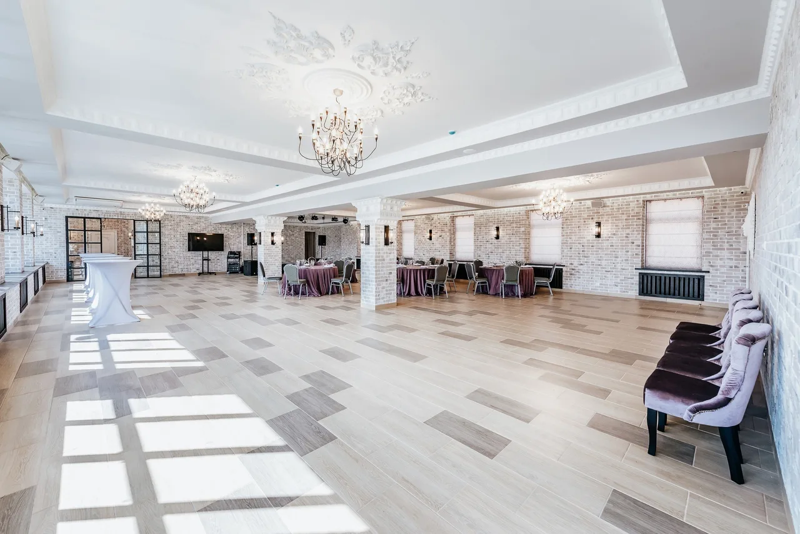
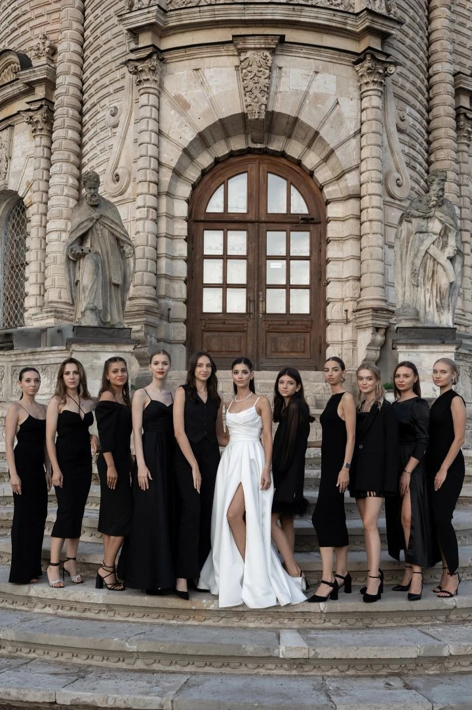

Место, где каждый праздник становится особенным и незабываемым
Мы очень рады, что Вы остановили свой выбор на нашей площадке!
Команда River loft сделает всё для того, чтобы наши гости чувствовали себя максимально комфортно, как в процессе подготовки, так и в день мероприятия!
В независимости от формата торжества, мы готовы помочь Вам с организацией, планированием, расстановкой столов, подбором подрядчиков, составлением меню, расчётом количества необходимых напитков и многих других вопросов.
Выбирая River loft, Вы делаете своё мероприятие организованным, понятным и максимально комфортным!


Смета на мероприятие обычно состоит из:

Меню на каждое мероприятие составляется индивидуально в зависимости от пожеланий заказчика. Рекомендованный ассортимент блюд включает в себя:
Среднее количество еды на человека составляет 1100-1400 грамм на персону.

Наш зал оснащён музыкальной системой JBL PRX 400, 2 колонки по 400 Вт. и 2 сабвуфера по 800 Вт. Использование музыкальной аппаратуры возможно только при наличии диджея. Без диджея доступа к дорогостоящей музыкальной аппаратуре у Вас не будет! Подключение осуществляется через цифровой пульт Soundcraft UI16 или аналоговый пульт Yamaha MG10XU с помощью двух кабелей XLR. Микрофонов у нас нет!
Наши сотрудники помогут Вашим подрядчикам с подключением, но техник или звукорежиссер у нас отсутствует, аппаратура имеет базовую настройку, детальную подстройку аппаратуры под себя диджей осуществляет самостоятельно.
River loft оснащен современной светомузыкой. Нашим гостям доступны: Заливочный свет WASH 1915 в количестве 4 шт. и Beam 150 и 200 Вт. в количестве не менее 6 штук. Светомузыка настроена через блок Sunlight 2 с Wi-Fi DMX на красном сигнале, а также дыммашина (легкий дым). За дополнительную плату доступен лазерный проектор с «Эффектом Золушки». Управление данной светомузыкой, а также дыммашиной и лазерным проектором осуществляет сотрудник нашей площадки. Его услуги включены в стоимость аренды площадки.
Для сервировки используется прозрачная посуда. Прозрачные тарелки (сервировка в 2 тарелки, 2 вилки и 2 ножа), а также прозрачные классические бокалы (для сервировки по умолчанию используется Винный бокал и бокал Флюте для шампанского, также доступны Хайбол для безалкогольных напитков, Снифтер для коньяка, Шот для крепких напитков, Рокс для виски, Мартинки и Маргаритки для коктейлей, а также пивные бокалы).
Для подачи блюд тспользуется посуда белого и черного цветов из высококачественной керамики, сланцевого камня и дерева разных размеров и форм.
По умолчанию, стандартный вариант обслуживания 1 официант на 2 стола, отдача салатов и горячих блюд осуществляется в общих тарелках по 3-4 порции в тарелке. Алкоголь и безалкогольные напитки стоят на столе.
У нас есть варианты порционной подачи, а также вариант VIP-обслуживания (Доп. Услуга, за каждым столом будет свой официант). При VIP-обслуживании напитки не стоят на столах гостей, а раскладка салатов, горячих блюд и розлив напитков осуществляется официантами по опросу.

В день мероприятия наши гости, как правило, оплачивают 3 статьи расходов:
Весь перечень имущества, а также дополнительных услуг прописаны в договорах и меню.

River Loft располагается в одном из самых красивых районов Подмосковья вблизи усадьбы Голицына и в 200 метрах от объекта культурного наследия Церкви Знамения Пресвятой Богородицы 1699 года постройки, который является одним из самых неординарных памятников церковного зодчества рубежа XVII–XVIII вв. Ни один другой подмосковный храм не является столь загадочным, как этот. Доподлинно неизвестны ни автор этого шедевра, ни мастера, трудившиеся здесь. С уверенностью можно сказать лишь, что над созданием храма в Дубровицах трудились как иноземные, так и русские мастера.
Территория действующего храма открыта для всех желающих. Помимо самого храма посетители могут прогуляться по обновленному парку на месте слияния двух рек Пахры и Десны, а также посетить смотровую площадку с потрясающими видами. Гостям доступна обширная бесплатная парковка, с возможностью использования каршеринга.

Каждый гость для нас является особенным. Мы хотим, чтобы и после свадебного торжества праздник для Вас продолжился незабываемым свадебным путешествием.
Туристическое агентство Emoji Tours это место, где Вы сможете получить море незабываемых впечатлений и ощутить надежность, заботу и новые впечатления от путешествия мечты.
Наша задача — чтобы ваше путешествие стало индивидуальной историей, которую вы будете пересказывать годами. Каждая деталь продумана для вашего вдохновения.